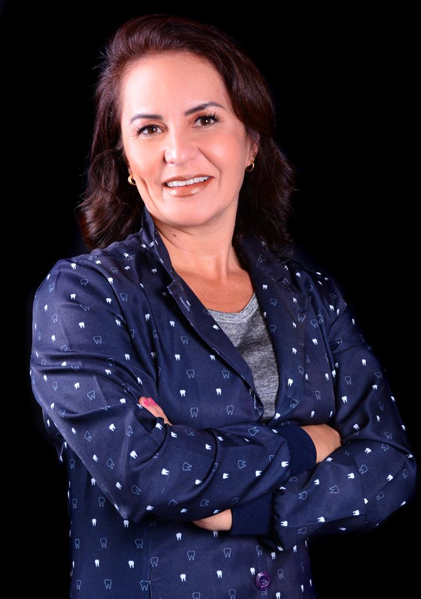
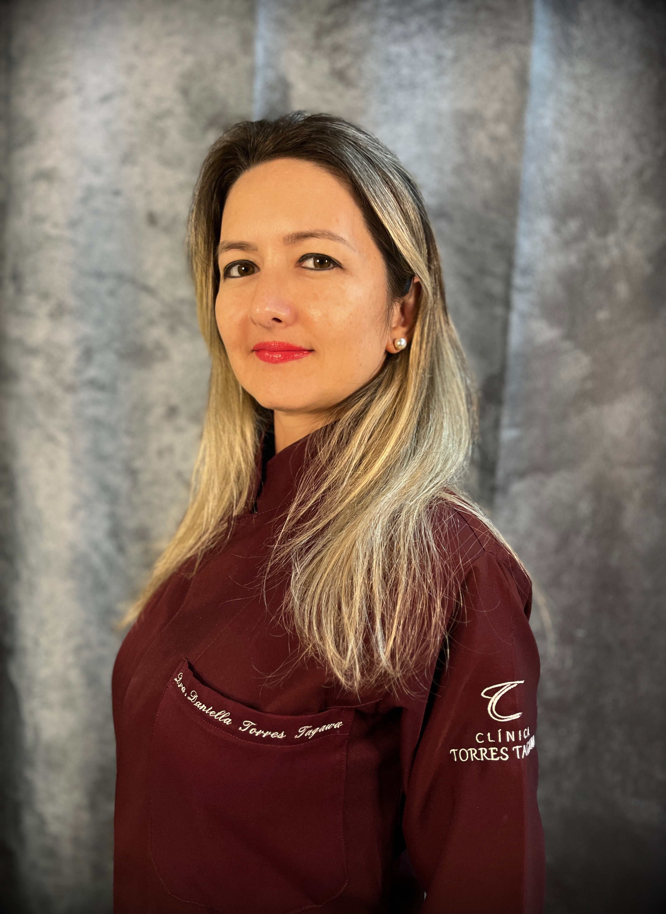

Profissionais dedicadas ao cuidado do sorriso da sua família

Odontopediatra
CRO-SP 70704
Cirurgiã-dentista especializada em Odontopediatria, dedicada ao cuidado da saúde bucal de bebês, crianças e adolescentes. Possui formação sólida com pós-graduação em Odontologia para Pacientes Especiais pela FOUSP, especialização em Saúde da Família pela UNIFESP e mestrado em Odontologia em Saúde Coletiva pela FOP-UNICAMP.
Atua também na rede municipal de Cubatão e no Hospital Infantil Gonzaga, com experiência no atendimento de crianças em diferentes contextos — inclusive pacientes com necessidades especiais.
Seu principal objetivo é proporcionar uma experiência tranquila e positiva desde a primeira consulta. O atendimento é feito com paciência, linguagem lúdica e respeito ao tempo de cada criança, ajudando a reduzir o medo e construir uma relação de confiança com o dentista desde cedo.
Acredita que a prevenção é o caminho para um sorriso saudável ao longo da vida, orientando os pais de forma clara e prática em cada etapa do desenvolvimento infantil.

Ortodontista
CRO-SP 80824
Cirurgiã-dentista especialista em Ortodontia, com atuação em Santos – SP. É certificada pelo Board Brasileiro de Ortodontia e Ortopedia Facial (BBO), uma das mais importantes certificações de excelência clínica na área.
Essa certificação é concedida a ortodontistas que demonstram alto nível de precisão no diagnóstico, planejamento e execução dos tratamentos. No Brasil, entre cerca de 31 mil ortodontistas, apenas uma pequena parcela possui esse título — o que reforça o alto grau de exigência e qualidade envolvido.
Possui pós-graduação, mestrado e doutorado em Ortodontia pela UNIFESP, com ampla experiência em tratamentos ortodônticos modernos e personalizados para crianças, adolescentes e adultos.
Trabalha com aparelhos fixos e alinhadores invisíveis, sempre com foco em resultados estéticos e funcionais. Cada tratamento é planejado de forma individualizada, buscando equilíbrio entre saúde, função e estética do sorriso.
Seu acompanhamento próximo durante todo o processo garante segurança, previsibilidade e tranquilidade para o paciente.
Ao escolher uma ortodontista certificada pelo Board, você conta com:
Se você busca um tratamento ortodôntico de excelência, agende uma avaliação e conheça um atendimento baseado em alto padrão clínico e evidência científica.